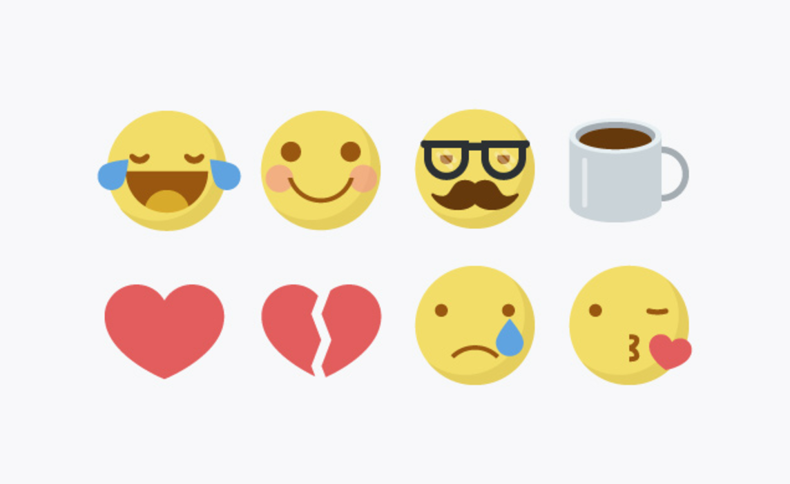
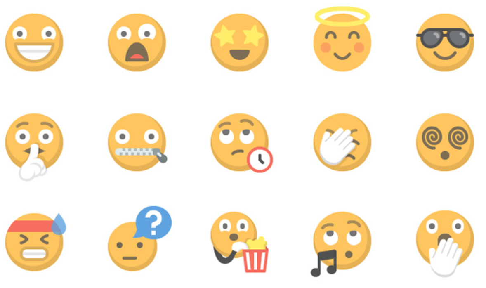
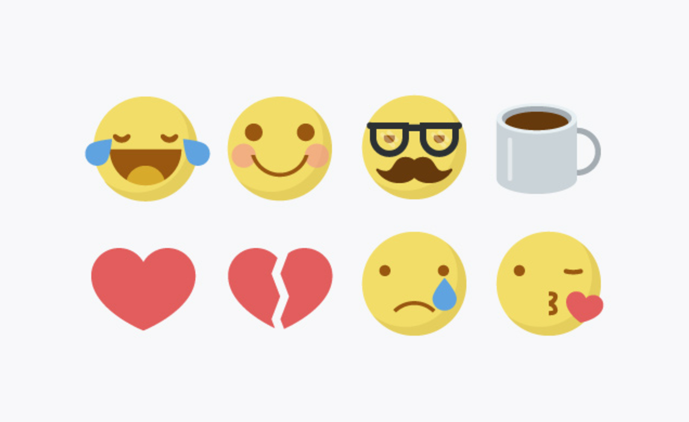
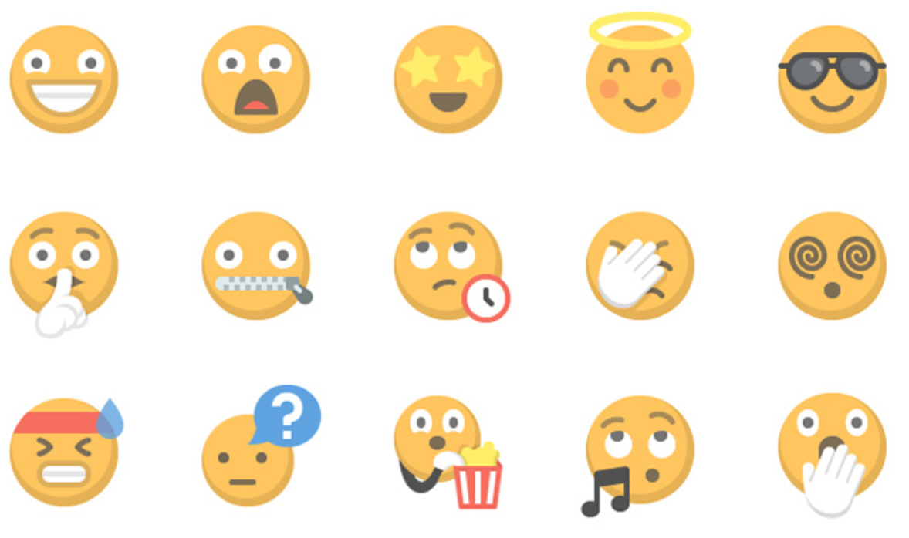

back
This presentation is on the history of the development of the emoji.
Emoticons and emojis are used to express human emotion and tonality through technology despite lack of face to face interaction.

Emoticons were first invented in 1982 by professor Scott Fahlman of Carnegie Mellon University. He wanted to created what he dubbed a “joke marker” and implemented the key combination of a colon for eyes, dash for nose and closing parenthesis for mouth viewed sideways to form :) (the first iteration of a smiley)
In 1963 the first icon of the smiley face was invented by freelance artist Harvey Ball. He pinned a yellow button with two black dots (to represent eyes) and an upturned thick curve (to represent a smile) to form his smiley icon. His work became defined the visual basis of the smiling emoticon and emoji for further adaptions.
About a decade later in the late 1990s, Shigetaka Kurita, created the e-moji as a design solution for the Japanese telecom company NTT Docomo.
Kurita’s telecom company needed a marketing tactic to distinguish it’s paging service from their competitors and thus Kurita pitched the idea of adding simplistic cartoons to keyboards in an attempt to appeal to teens. Kurita stated that communication was very text heavy, and emphasized the importance of pictures to convey messages. Once his proposal had been accepted, he used the duration of a month to complete the world’s first 180 emojis designed for “i-mode” which was the first mobile internet platform.

The word "emoji" literally translates from Japanese as "picture" (e) and "character" (moji). Kurita drafted his emojis by drawing with pens and pencils on 12-by-12 pixel grids inspired by Manga (Japanese comics) and Kanji (Japanese characters from their written language). Emojis became a Japanese phenomenon and were widely adopted by the Japanese market and other telecom companies
In 2007, when Apple launched the first Iphone (when the smart phone market began to bloom globally) they embedded the emoji functions into their operating systems in order to appeal to the Japanese market. Contemporary emojis have 722 symbols and have been embedded into Unicode.Unicode is an international programming standard that allows one operating system to text another. Emojis are understandable across linguisitic barriers and generally deemed emotionally uplifting. A Swiftkey study found that smiling face emojis are the most popular emoji globally (by 44.8%)


back